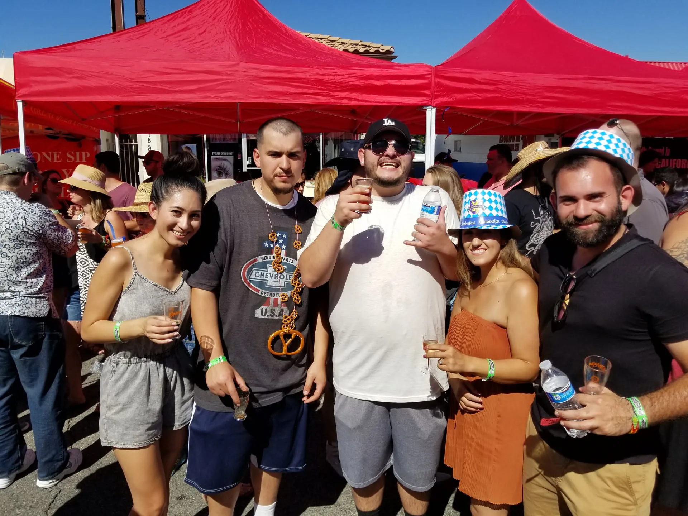
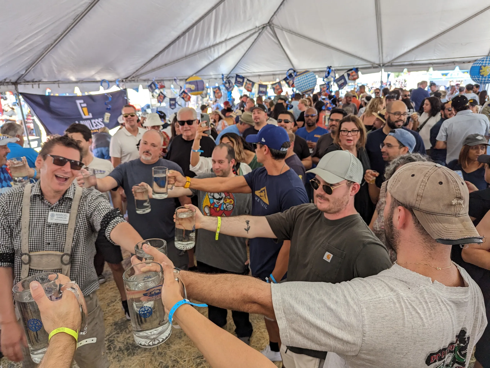
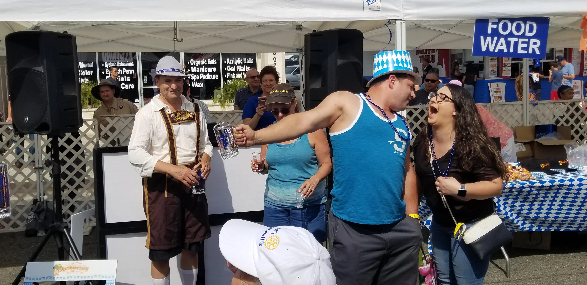
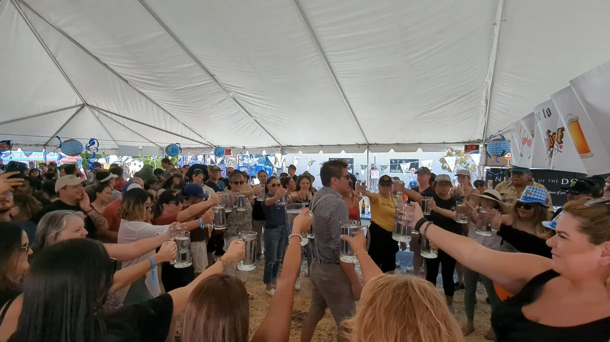
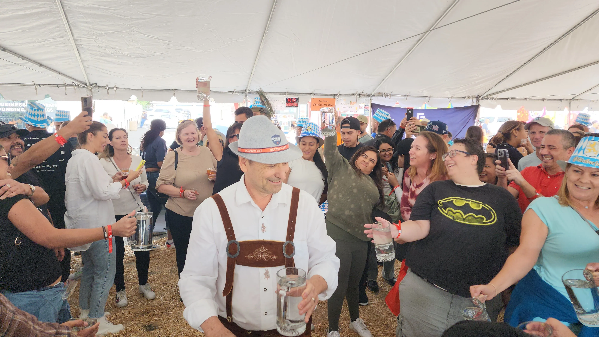
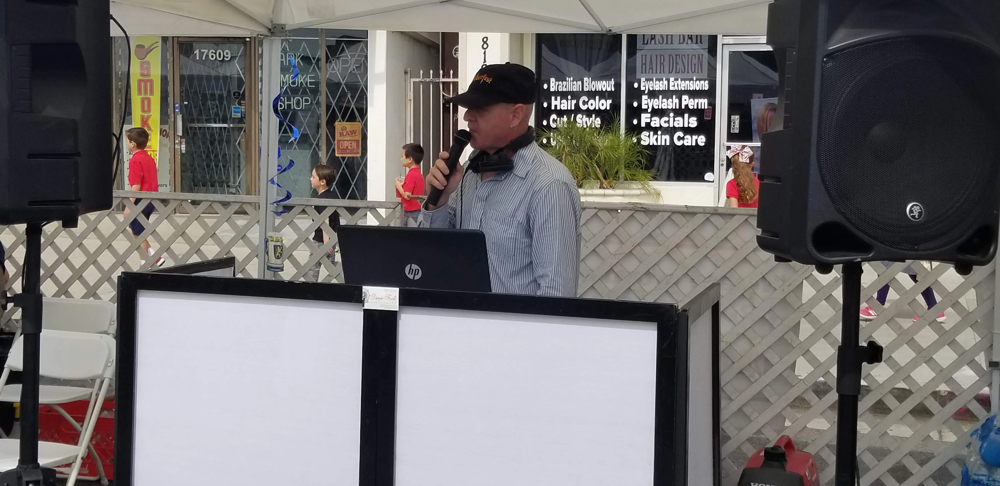

Thank You to Our Sponsors
We’re grateful for the generous support of local businesses and organizations that help make Oktoberfest possible.
Music, dancing, great food, and community spirit, all in support of Granada Hills Rotary projects.
Our signature Oktoberfest brings together neighbors, families, and friends for an evening of fun — and raises funds for local and international Rotary projects.
Check back soon for final date, location, and ticket information.
Beer, wine, music, contests, and that once‑a‑year neighborhood party vibe.
Community Fundraiser
Oktoberfest is Granada Hills Rotary’s marquee fundraiser, held alongside the local street fair.
Guests purchase a wristband with ten pull tabs, each good for a beer or wine taster poured in the Rotary area.
This is a stand‑up, come‑and‑go event with a DJ taking song requests, plenty of room to mingle, and easy access to the rest of the street fair along the main boulevard.
Questions about accessibility, wristbands, or bringing a group? Reach out and we’ll be happy to help.
Exact times may adjust a bit each year, but this is how Oktoberfest usually fits into the street fair day.
Final tastings, last songs from the DJ, and a thank‑you to guests, volunteers, and sponsors close out the event as the day winds down.
A look back at the crowds, music, and smiles shows why this event is a highlight of our Rotary year.
Neighbors, friends, and families enjoy food, music, and fellowship together while bands keep the energy high with classic hits, polka favorites, and dance tunes.
German‑inspired plates, desserts, and a selection of beer, wine, and soft drinks help set the tone for the day.
Oktoberfest is designed primarily for adults, but responsible teens and older kids are welcome when accompanied by an adult. IDs are required for alcohol purchases.
Casual and comfortable is perfect. Festive Bavarian attire is always welcome but not required.
Proceeds help fund Granada Hills Rotary scholarships, youth leadership programs, community projects, and international Rotary initiatives.
Sponsorships help underwrite event costs so more of every ticket goes directly to service projects.
Have a custom idea or in‑kind donation? We’re happy to talk about creative ways to partner.
Neighbors, friends, and families enjoying food, music, and fellowship together.






We’re grateful for the generous support of local businesses and organizations that help make Oktoberfest possible.
Sponsorships help underwrite event costs so more of every ticket goes directly to Rotary scholarships, youth programs, community projects, and international initiatives.
Whether you’d like logo visibility, recognition on event materials, or a custom in‑kind partnership, we’re happy to talk about creative ways to support the event.